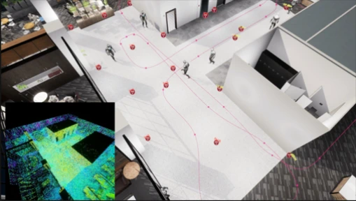
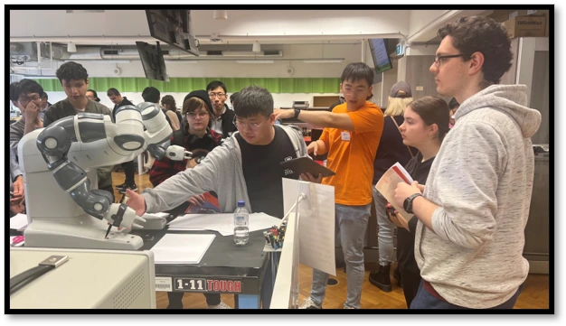

Data
Digital twin platforms that generate high-quality AI training data for industry applications.
Explore DataThe University of Sydney
We build and optimise computing systems for AI applications.


Digital twin platforms that generate high-quality AI training data for industry applications.
Explore Data
Decentralised systems for training AI models on large volumes of distributed, unlabelled data.
Explore Training
Multi-tenant inference systems and efficient parallel processing for running AI models on edge servers and mobile devices.
Explore InferenceThe paper introduces a system for serving multiple language-model agents on a single consumer GPU.
The platform brings real radar measurements and indoor simulations into a common signal representation.
The study compares how training objectives and network connectivity affect learning when devices hold different kinds of data.
For research collaboration and prospective student enquiries, please contact us.